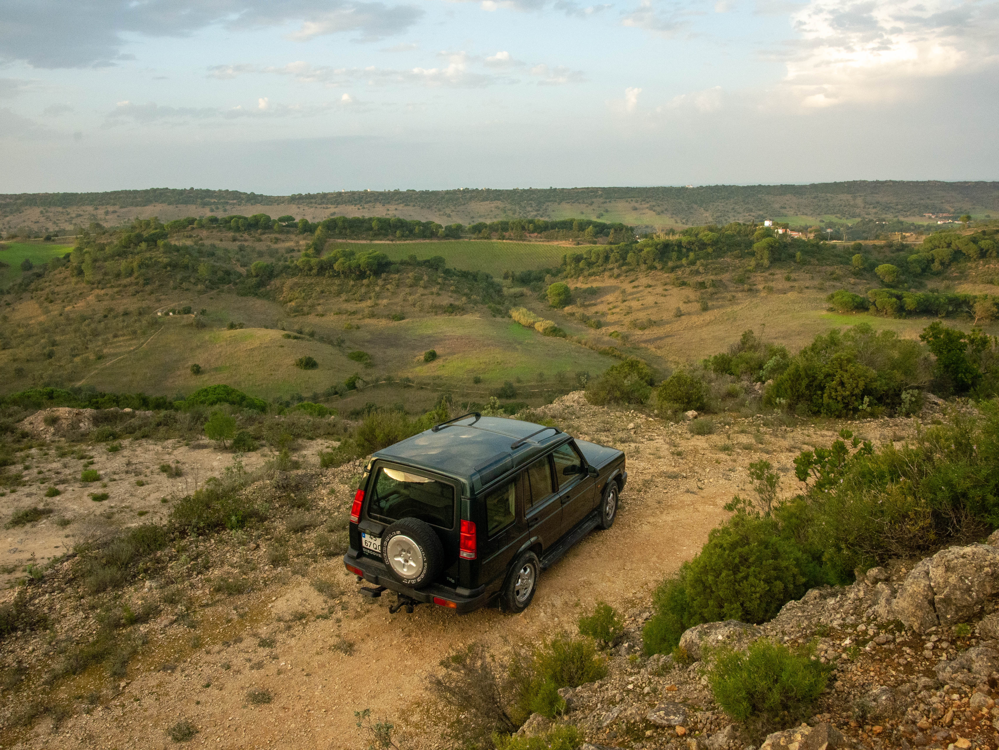
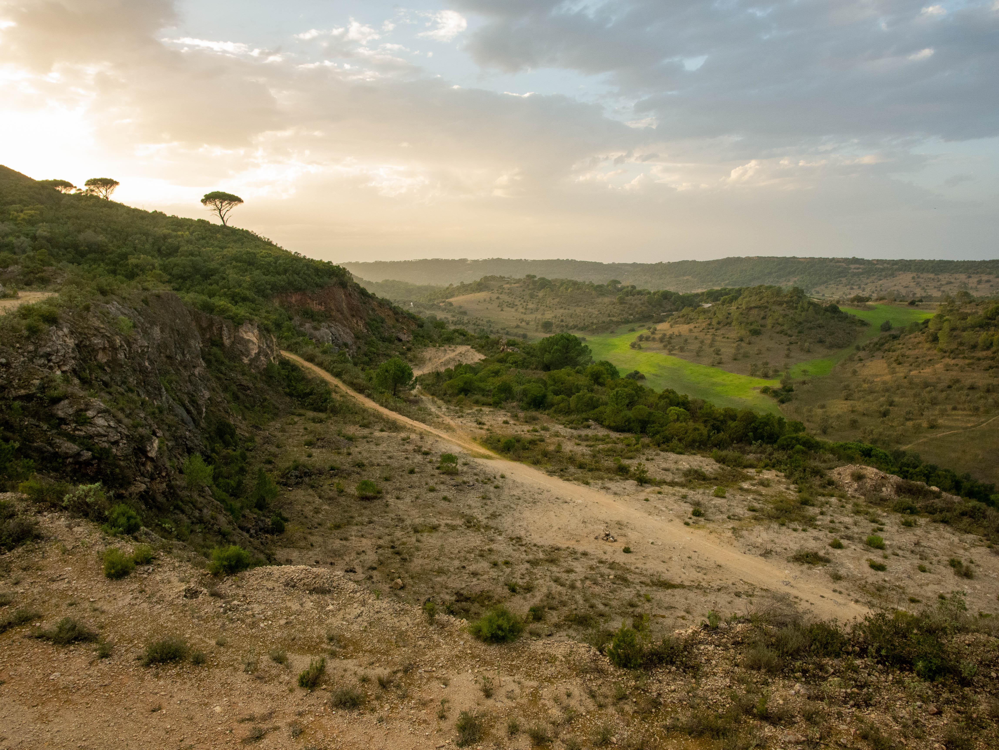
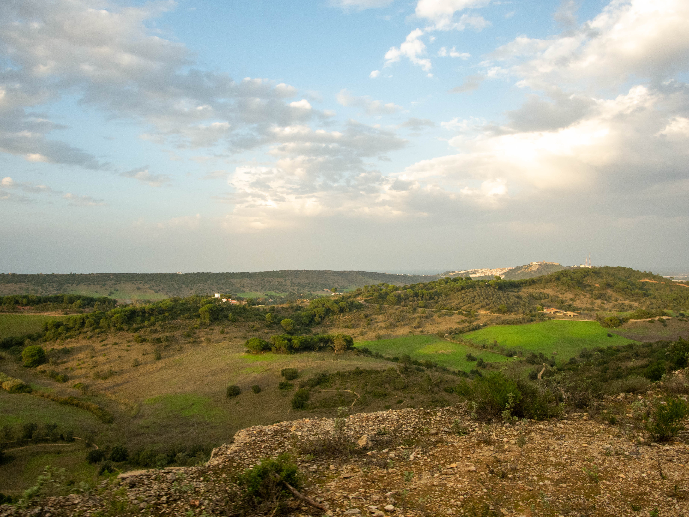
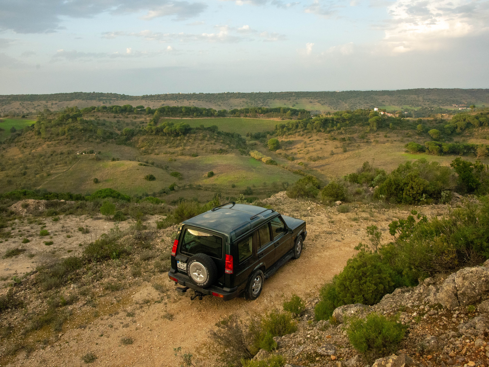
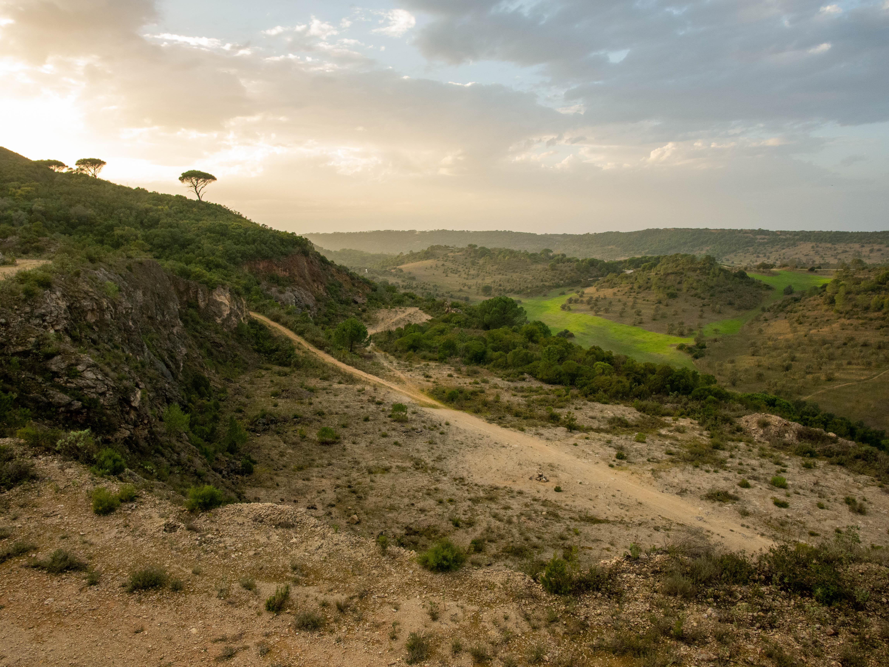
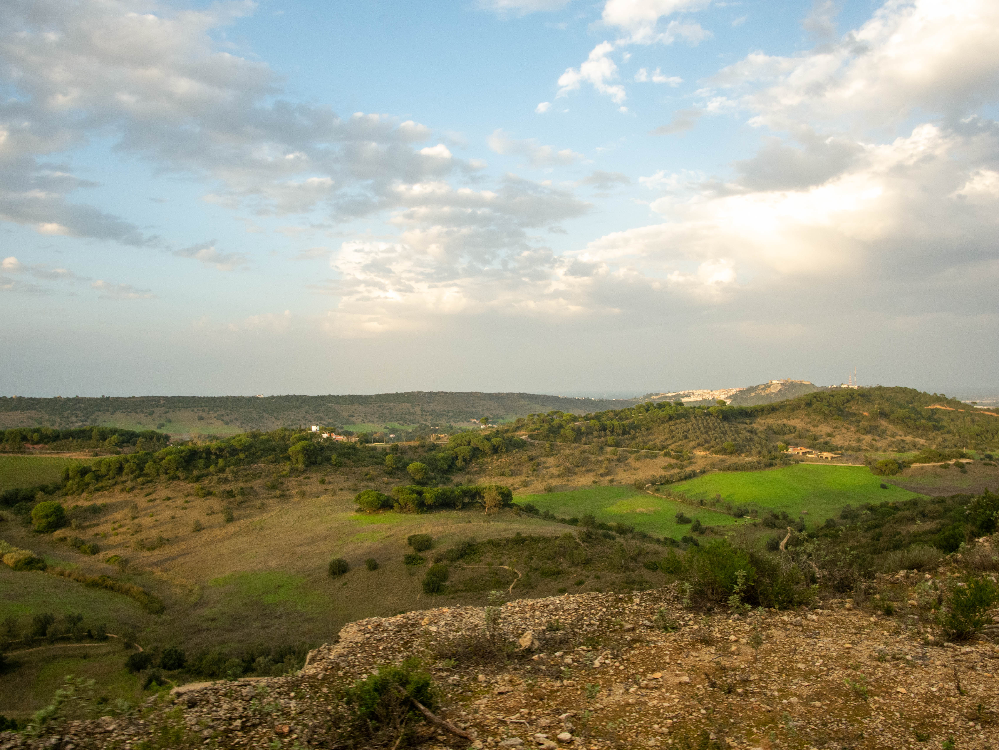

Tour 4x4 Rota dos castelos Tour 4x4 Castle route Tour 4x4 Ruta de los castillos Tour 4x4 Route des châteaux
Incluído no Passeio Included in the Tour Incluido en el Tour Inclus dans le Circuit
- Condutor profissional off-road Professional off-road driver Conductor profesional off-road Conducteur professionnel hors route
- Água e snacks incluídos Complimentary water and snacks Agua y snacks incluidos Eau et collations offerts
- Paragens fotográficas em locais panorâmicos Photography stops at scenic locations Paradas fotográficas en lugares pintorescos Arrêts photo dans des lieux pittoresques
Informação Detalhada do Passeio Detailed Tour Information Información Detallada del Tour Informations Détaillées du Circuit
Deixe-se conquistar pelo Parque Natural da Arrábida. Venha conhecer os três concelhos que são parte integrante da reserva natural.
Relaxe, ative os sentidos, contemple a beleza da paisagem e observe cada detalhe guardando na memória cores, formas, texturas e aromas do Parque Natural da Arrábida.
Propomos-lhe uma viagem por caminhos estradões florestais, de terra batida e de asfalto que se cruzam com a história e cultura do Parque Natural da Arrábida. A arquitetura militar portuguesa são testemunho de um povo guerreiro e cada pedra é testemunha da força de querer do povo português. Mas este tour é um misto de emoções e surpresas.
O dia vai ser repleto de contrastes de cores entre o verde luxuriante da vegetação mediterrânica com o azul do mar e as areias finas e douradas e águas transparentes das pequenas praias.
Venha conhecer a história, a cultura e as suas atividades económicas muitas delas milenares, como a pesca, o vinho e o azeite.
Let yourself be conquered by the Arrábida Natural Park. Come and discover the three municipalities that are part of the natural reserve.
Relax, activate your senses, contemplate the beauty of the landscape and observe every detail, keeping in mind the colors, shapes, textures and aromas of the Arrábida Natural Park.
We propose a journey through forest paths, dirt roads and asphalt that intersect with the history and culture of the Arrábida Natural Park. The Portuguese military architecture is a testament to a warrior people, and each stone is a witness to the strength of the Portuguese people's will. But this tour is a mix of emotions and surprises.
The day will be filled with contrasts of colors between the lush green of the Mediterranean vegetation and the blue of the sea, the fine golden sands, and the transparent waters of the small beaches.
Come and learn about the history, culture, and economic activities of the region, many of which are millennia old, such as fishing, wine production, and olive oil.
Déjese conquistar por el Parque Natural de Arrábida. Ven a conocer los tres municipios que forman parte de la reserva natural.
Relájate, activa tus sentidos, contempla la belleza del paisaje y observa cada detalle guardando en tu memoria los colores, formas, texturas y aromas del Parque Natural de Arrábida.
Te proponemos un viaje por caminos forestales, caminos de tierra y asfalto que se cruzan con la historia y la cultura del Parque Natural de Arrábida. La arquitectura militar portuguesa es testigo de un pueblo guerrero y cada piedra es testigo de la fuerza de voluntad del pueblo portugués. Pero este tour es una mezcla de emociones y sorpresas.
El día estará lleno de contrastes de colores entre el verde exuberante de la vegetación mediterránea y el azul del mar, las finas arenas doradas y las aguas transparentes de las pequeñas playas.
Ven a conocer la historia, la cultura y las actividades económicas de la región, muchas de las cuales son milenarias, como la pesca, la producción de vino y el aceite de oliva.
Laissez-vous conquérir par le Parc Naturel d'Arrábida. Venez découvrir les trois municipalités qui font partie de la réserve naturelle.
Détendez-vous, activez vos sens, contemplez la beauté du paysage et observez chaque détail en gardant à l'esprit les couleurs, les formes, les textures et les arômes du Parc Naturel d'Arrábida.
Nous vous proposons un voyage à travers des chemins forestiers, des routes de terre et de l'asphalte qui se croisent avec l'histoire et la culture du Parc Naturel d'Arrábida. L'architecture militaire portugaise témoigne d'un peuple guerrier, et chaque pierre est le témoin de la force de volonté du peuple portugais. Mais cette visite est un mélange d'émotions et de surprises.
La journée sera remplie de contrastes de couleurs entre le vert luxuriant de la végétation méditerranéenne et le bleu de la mer, les sables fins dorés et les eaux transparentes des petites plages.
Venez découvrir l'histoire, la culture et les activités économiques de la région, dont beaucoup sont millénaires, comme la pêche, la production de vin et l'huile d'olive.
O que Trazer What to Bring Qué Traer Que Rapporter
Equipamento Recomendado Recommended Gear Equipo Recomendado Équipement Recommandé
- ✔️ Roupa confortável em camadas Comfortable, layered clothing Ropa cómoda en capas Vêtements confortables en couches
- ✔️ Sapatos de caminhada ou confortáveis Hiking or comfortable shoes Zapatos de senderismo o cómodos Chaussures de randonnée ou confortables
- ✔️ Protetor solar e chapéu Sunscreen and hat Protector solar y sombrero Crème solaire et chapeau
- ✔️ Câmara ou smartphone Camera or smartphone Cámara o smartphone Appareil photo ou smartphone
Não Recomendado Not Recommended No Recomendado Non Recommandé
- ❌ Saltos altos High heels Tacones altos Talons hauts
- ❌ Roupa restritiva Restrictive clothing Ropa restrictiva Vêtements restrictifs